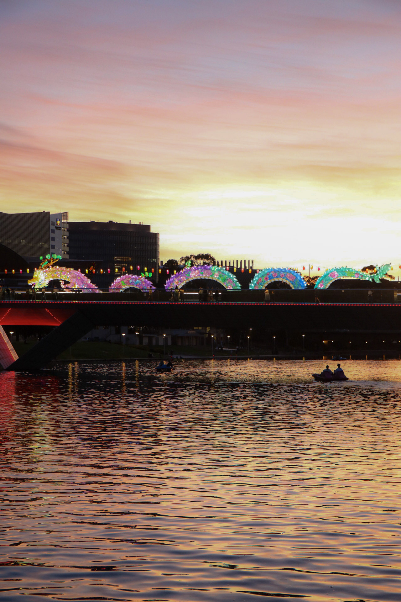

Adelaide · Available worldwide
Light.Place.Human.
Quiet observations, cinematic landscapes and honest portraits—made with patience, precision and respect for the moment.
↓ View selected workThe extraordinary lives inside the ordinary.
Photography is an act of attention: noticing the shape of silence, the architecture of light and the fleeting gestures that reveal who we are.
This portfolio brings together personal and commissioned visual stories. Each frame is composed to feel immediate now—and resonant years from now.
A study in atmosphere.

Made slowly. Felt immediately.
I work with natural light, thoughtful direction and an editorial eye. The process is collaborative and calm, giving people and places enough space to become themselves.